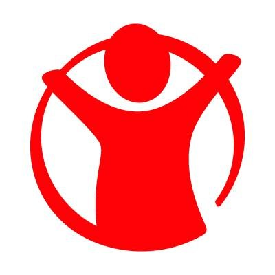

JavaScript Tabs
View More ExamplesExample:
Acute hunger or starvation are often highlighted on TV screens: hungry mothers too
weak to breastfeed their children in drought-hit Ethiopia, refugees in war-torn Syria queueing for food rations,
helicopters airlifting high energy biscuits to earthquake victims in Haiti or Pakistan.
These situations are the result of high profile crises like war or natural disasters,
which starve a population of food. Yet emergencies account for less than eight percent
of hunger's victims. Daily undernourishment is a less visible form of hunger -- but it
affects many more people, from the shanty towns of Jakarta in Indonesia and the Cambodian
capital Phnom Penh to the mountain villages of Bolivia and Nepal. In these places, hunger
is much more than an empty stomach. For weeks, even months, its victims must live on significantly
less than the recommended 2,100 kilocalories that the average person needs to lead a healthy life.
The body compensates for the lack of energy by slowing down its physical and mental activities.
A hungry mind cannot concentrate, a hungry body does not take initiative, a hungry child loses all
desire to play and study. Hunger also weakens the immune system. Deprived of the right nutrition,
hungry children are especially vulnerable and become too weak to fight off disease and may die from common
infections like measles and diarrhoea. Each year, almost 7 million children die before reaching the age of five;
malnutrition is a key factor in over a third of these deaths. Visit Us
With the general lack of roads, electricity, schools, hospitals and health clinics, as well as a lack of potable water and sanitation services, we helped Mpilonhle embark on a more holistic approach to address the broader needs of the community in ways which enhanced their HIV prevention work. In early 2011, construction began on a collaborative community initiative called Home Field Advantage ( HFA) to bring clean water sources, sports fields, food gardens, community laundry basins, and non-contaminating toilet blocks to four secondary schools. The generosity of CTAOP’s supporters, including the Annenberg Foundation, ONEXONE, Orange County Center for Living Peace, Red Granite Pictures and many others, enabled Mpilonhle to create hubs of activity at these schools that will allow their health services to reach beyond enrolled students to the community at large. Would you like to learn more about this project? Check: Our Mission & Values
 The Save the Children Fund, commonly known as Save the Children, is an international non-governmental organization that promotes children's rights, provides relief and helps support children in developing countries. It was established in the United Kingdom in 1919 in order to improve the lives of children through better education, health care, and economic opportunities, as well as providing emergency aid in natural disasters, war, and other conflicts. In addition to the UK organisation, there are 30 other national Save the Children organisations who are members of Save the Children International, a global network of nonprofit organisations s upporting local partners in over 120 countries around the world. Save the Children promotes policy changes in order to gain more rights for young people especially by enforcing the UN Declaration of the Rights of the Child. Alliance members coordinate emergency-relief efforts, helping to protect children from the effects of war and violence. Save the Children has general consultative status with the United Nations Economic and Social Council. Visit Us
/*---------- TABS STANDALONE STYLE -----------*/
.tab-panels, .panel {
float: left;
width: 100%;
}
.tab-panels .panel{
display: none;
}
.tab-panels .panel-wrapper{
display: block !important;
overflow: hidden;
float: left;
width: 100%;
position: relative;
}
.tab-panels > div{
display: none;
}
.tab-panels .tab-actions {
float: left;
margin-bottom: 20px;
}
.tab-panels .tab-actions li a:hover,
.tab-panels .tab-actions .active {
color: #EE4D3B;
border-color: #EE4D3B;
}
.tab-panels .panel p{
font-size: 14px;
line-height: 21px;
}
.tab-panels .panel-current, .tab-panels .ajax-panel{
display: block !important;
}
.tab-panels .sliding-panels{
display: block !important;
position: absolute;
}
//basic static tab on hover effect
$('.tab-one').dcTab({
effect: {type: "slideLeft"},
trigger: "mouseover"
});
JavaScript Modal : click on buttons below to trigger modal pop-up
View More Examples

/*---------- MODAL STANDALONE STYLE -----------*/
@charset "UTF-8";
body.modal-active{
overflow: hidden;
}
.modal-active .modal-wrapper {
overflow-x: hidden;
overflow-y: auto;
}
.modal-wrapper{
position: fixed;
top: 0;
right: 0;
left: 0;
bottom: 0;
z-index: 100000;
display: block;
}
.modal-wrapper .modal-background{
position: absolute;
top: 0;
right: 0;
left: 0;
bottom: 0;
background-color: #000;
filter: alpha(opacity=60);
opacity: .6;
z-index: 9;
}
.modal-wrapper .modal-overflow{
overflow-x: hidden;
overflow-y: scroll;
}
.modal-wrapper .modal-inner{
background: #fff;
display: block;
position: relative;
width: 600px;
margin: 75px auto;
z-index: 10;
-webkit-box-shadow: 0 2px 5px rgba(0,0,0,.3);
box-shadow: 0 2px 5px rgba(0,0,0,.3);
}
.modal-wrapper .modal-inner .modal-header,
.modal-wrapper .modal-inner .modal-footer{
min-height: 15px;
padding: 15px;
overflow: hidden;
}
.modal-wrapper .modal-inner .modal-header{
border-bottom: 1px solid #ddd;
}
.modal-wrapper .modal-inner .modal-footer{
border-top: 1px solid #ddd;
}
.modal-wrapper .modal-inner .modal-header .modal-title{
float: left;
font-size: 15px;
font-weight: bold;
}
.modal-wrapper .modal-inner .modal-content{
padding: 15px;
font-size: 13px;
line-height: 19px;
overflow: hidden;
}
.modal-video .modal-header,
.modal-video .modal-footer{
border: none !important;
}
.modal-video .modal-content{
position: relative;
padding: 0 0 56.25% 0!important;
height: 0;
}
.modal-video .modal-content iframe {
position: absolute;
top: 0;
left: 0;
width: 100%;
height: 100%;
}
.modal-wrapper .modal-inner .modal-content img{
position: relative;
display: block;
width: 100%;
float: left;
}
.modal-wrapper .modal-inner .modal-x{
background: #fff;
position: absolute;
top: 10px;
right: 10px;
cursor: pointer;
font-weight: bold;
font-size: 15px;
padding: 5px 7px;
}
.modal-wrapper .modal-inner .modal-x:hover{
color: #057ed0;
}
.modal-wrapper .modal-inner .btn{
float: right;
margin-left: 4px;
}
.yttrigger{
position: relateive;
float: left;
overflow: hidden;
}
.yttrigger .ytplay {
background: #262626;
position: absolute;
z-index: 100;
left: 45%;
top: 45%;
padding: 10px 22px;
border: 4px solid #fff;
-webkit-box-shadow: 0 2px 3px rgba(0,0,0,.46);
box-shadow: 0 2px 3px rgba(0,0,0,.46);
opacity: 0.8;
border-radius: 122px;
padding: 18px;
}
.yttrigger .ytplay > i {
width: 0;
height: 0;
border-color: transparent;
border-style: solid;
border-left-color: #fff;
border-right-width: 0;
border-width: 13px;
z-index: 10;
float: left;
position: relative;
left: 9px;
top: 1px;
}
.yttrigger span:hover{
opacity: 0.7;
}
/* modal effects */
.modal-inner{
-webkit-animation-duration: 0.3s;
animation-duration: 0.3s;
-webkit-animation-fill-mode: both;
animation-fill-mode: both;
}
/* background */
@-webkit-keyframes fadeIn {
0% {opacity: 0;}
100% {opacity: 1;}
}
@keyframes fadeIn {
0% {opacity: 0;}
100% {opacity: 1;}
}
.modal-background, .modal-in-fade {
-webkit-animation-name: fadeIn;
animation-name: fadeIn;
}
/* modal in down */
@-webkit-keyframes fadeInDown {
0% {
opacity: 0;
-webkit-transform: translate3d(0, -50%, 0);
transform: translate3d(0, -50%, 0);
}
100% {
opacity: 1;
-webkit-transform: none;
transform: none;
}
}
@keyframes fadeInDown {
0% {
opacity: 0;
-webkit-transform: translate3d(0, -50%, 0);
transform: translate3d(0, -50%, 0);
}
100% {
opacity: 1;
-webkit-transform: none;
transform: none;
}
}
.modal-in-down {
-webkit-animation-name: fadeInDown;
animation-name: fadeInDown;
}
/* modal in up */
@-webkit-keyframes fadeInUp {
0% {
opacity: 0;
-webkit-transform: translate3d(0, 100%, 0);
transform: translate3d(0, 100%, 0);
}
100% {
opacity: 1;
-webkit-transform: none;
transform: none;
}
}
@keyframes fadeInUp {
0% {
opacity: 0;
-webkit-transform: translate3d(0, 100%, 0);
transform: translate3d(0, 100%, 0);
}
100% {
opacity: 1;
-webkit-transform: none;
transform: none;
}
}
.modal-in-up {
-webkit-animation-name: fadeInUp;
animation-name: fadeInUp;
}
/* modal in right */
@-webkit-keyframes fadeInRight {
0% {
opacity: 0;
-webkit-transform: translate3d(50%, 0, 0);
-moz-transform: translate3d(50%, 0, 0);
transform: translate3d(50%, 0, 0);
}
100% {
opacity: 1;
-webkit-transform: none;
transform: none;
}
}
@keyframes fadeInRight {
0% {
opacity: 0;
-webkit-transform: translate3d(50%, 0, 0);
-moz-transform: translate3d(50%, 0, 0);
transform: translate3d(50%, 0, 0);
}
100% {
opacity: 1;
-webkit-transform: none;
-moz-transform: none;
transform: none;
}
}
.modal-in-right {
-webkit-animation-name: fadeInRight;
animation-name: fadeInRight;
}
/* modal in left */
@-webkit-keyframes fadeInLeft {
0% {
opacity: 0;
-webkit-transform: translate3d(-100%, 0, 0);
transform: translate3d(-100%, 0, 0);
}
100% {
opacity: 1;
-webkit-transform: none;
transform: none;
}
}
@keyframes fadeInLeft {
0% {
opacity: 0;
-webkit-transform: translate3d(-100%, 0, 0);
transform: translate3d(-100%, 0, 0);
}
100% {
opacity: 1;
-webkit-transform: none;
transform: none;
}
}
.modal-in-left {
-webkit-animation-name: fadeInLeft;
animation-name: fadeInLeft;
}
/* custom edits */
.modal-footer .social img{
float: left;
width: 45px;
}
.modal-footer .social .social-info {
float: left;
margin-left: 6px;
font-size: 14px;
color: #555;
padding: 3px 0;
}
.modal-footer .social .social-info p{
margin: 3px 0;
}
.modal-footer .social .social-info .username span,
.modal-footer .social .social-info .date{
color: #555;
font-size: 13px;
}
.modal-footer .social .social-info .date a{
color: #057ed0;
}
.modal-footer .social .social-info .username a{
color: #057ed0;
font-weight: bold;
text-decoration: underline;
}
.modal-footer .social .social-info .username a:hover{
color: #333;
}
/* responsive */
@media (max-width: 768px){
.modal-wrapper .modal-inner{
width: 90% !important;
}
}
/*
Important is not to use the same
name for (selector) trigger as for data-target
if your trigger selector is the same as data-target
it'll be removed from dom element since we need to use
that to hide modal as default.
Better documentation will come soon as I finish the FW,
this is just a beta testing release
Modal plugin also supports Ajax Request
*/
/* modal up */
$('.modal-one').dcModal(
{
effect: "up",
hide: 'reverse',
style: {width: 380}
}
);
/* modal left */
$('.modal-two').dcModal(
{
effect: "left",
style: {width: 590}
}
);
/* modal right */
$('.modal-three').dcModal(
{
effect: "right",
style: {width: 590}
}
);
/* modal image */
$('.modal-four').dcModal({effect: "fadeIn", style: {width: 500}});
/* modal youtube */
$('.modal-five').dcModal({ style: {width: 840}});
JavaScript Popover
View More ExamplesExample:
Popover Static Right
I'm gonna disappear as soon as you hover out of the trigger element.
/*---------- POPOVER STANDALONE STYLE -----------*/
.pop-wrap{
display: inline-block;
position: relative;
}
.pop-open{
display: block !important;
}
.pop-inner{
width: 270px;
position: absolute;
top: 0;
left: 0;
font-family: "Helvetica Neue",Helvetica,Arial,sans-serif;
font-size: 14px;
font-weight: normal;
line-height: 21px;
display: none;
z-index: 1000;
padding: 14px;
}
.pop-inner .pop-padder{
background: #fff;
-webkit-box-shadow: 0 2px 5px rgba(0,0,0,.2);
box-shadow: 0 2px 5px rgba(0,0,0,.2);
border: 1px solid #bbb;
}
.pop-inner .pop-title{
padding: 6px 12px;
background: #eee;
font-size: 13px;
font-weight: bold;
color: #333;
border-bottom: 1px solid #ccc;
}
.pop-inner .pop-content{
padding: 12px;
color: #555;
}
/* arrows positioning */
.pop-arrow {
position: absolute;
}
.pop-arrow .front, .pop-arrow .back{
position: absolute;
width: 0;
height: 0;
border-color: transparent;
border-style: solid;
}
.pop-arrow .front{
border-width: 10px;
z-index: 10;
}
.pop-arrow .back{
border-width: 10px;
z-index: 9;
}
/* top */
.pop-inner.top > .pop-arrow{
bottom: 14px;
left: 50%;
margin-left: -10px;
}
.pop-inner.top > .pop-arrow > .front{
border-top-color: #fff;
border-bottom-width: 0;
left: 0;
top: -1px;
}
.pop-inner.top > .pop-arrow > .back{
border-top-color: #999;
border-bottom-width: 0;
}
/* bottom */
.pop-inner.bottom > .pop-arrow{
top: 4px;
left: 50%;
margin-left: -10px;
}
.pop-inner.bottom > .pop-arrow > .front{
border-bottom-color: #eee;
border-top-width: 0;
left: 0;
top: 1px;
}
.pop-inner.bottom > .pop-arrow > .back{
border-bottom-color: #999;
border-top-width: 0;
}
/* left */
.pop-inner.left > .pop-arrow{
top: 50%;
right: 14px;
margin-top: -10px;
}
.pop-inner.left > .pop-arrow > .front{
border-left-color: #fff;
border-right-width: 0;
left: -1px;
top: 0;
}
.pop-inner.left > .pop-arrow > .back{
border-left-color: #999;
border-right-width: 0;
}
/* right */
.pop-inner.right > .pop-arrow{
top: 50%;
left: 4px;
margin-top: -10px;
}
.pop-inner.right > .pop-arrow > .front{
border-right-color: #fff;
border-left-width: 0;
left: 1px;
top: 0;
}
.pop-inner.right > .pop-arrow > .back{
border-right-color: #999;
border-left-width: 0;
}
//trigger popinfo
$(".popinfo").dcPopover({trigger: "popinfo"});
//trigger on hover
$(".hover").dcPopover({trigger: "hover"});
//standard trigger is on click
$(".click").dcPopover();
JavaScript Tooltip
View More ExamplesExample:
/*---------- TOOLTIP STANDALONE STYLE -----------*/
.dc_tip_wrap{
position: relative;
display: inline-block;
}
form .dc_tip_wrap{
width: 100%;
}
.tip-wrapper {
background: #000;
color: #fff;
position: absolute;
z-index: 10000;
opacity: 0.8;
border-radius: 2px;
box-shadow: 0 1px 1px rgba(0,0,0,.2);
}
.tip-wrapper .tip-inner{
font-family: Arial;
font-size: 12px;
padding: 6px 10px;
white-space: nowrap;
line-height: 13px;
}
.tip-arrow {
position: absolute;
width: 0;
height: 0;
border-color: transparent;
border-style: solid;
}
.tip-wrapper.top .tip-arrow {
bottom: -5px;
left: 50%;
margin-left: -5px;
border-width: 5px 5px 0;
border-top-color: #000;
}
.tip-wrapper.left .tip-arrow {
top: 50%;
right: -5px;
margin-top: -5px;
border-width: 5px 0 5px 5px;
border-left-color: #000;
}
.tip-wrapper.bottom .tip-arrow {
top: -5px;
left: 50%;
margin-left: -5px;
border-width: 0 5px 5px;
border-bottom-color: #000;
}
.tip-wrapper.right .tip-arrow {
top: 50%;
left: -5px;
margin-top: -5px;
border-width: 5px 5px 5px 0;
border-right-color: #000;
}
//basic tooltip
$(".dctip").dcTip();
//form input tooltip
$('.tip_input').dcTip({trigger: "focus", background: "red"});
JavaScript Action
View More ExamplesExample:
/*---------- ACTIONS STANDALONE STYLE -----------*/
.action-wrap{
position: relative;
float: left;
}
.action{
padding-right: 0 !important;
}
.action-right .action{
padding-right: 0 !important;
}
.action-left .action{
padding-right: 12px !important;
padding-left: 0 !important;
}
.action span, .action-on span {
font-size: 18px;
text-align: center;
vertical-align: top;
width: 14px;
display: inline-block;
}
.action-right .action span{
margin: 0 8px;
padding: 0px 0px 0px 8px;
border-left: 1px solid rgba(0,0,0,0.24);
}
.action-left .action span {
margin: 0 8px;
padding: 0px 8px 0px 0;
border-right: 1px solid rgba(0,0,0,0.24);
}
.drop-action {
position: absolute;
top: 110%;
background: #fff;
min-width: 100%;
z-index: 1000;
width: auto;
display: none;
box-shadow: 0 1px 1px rgba(0,0,0,.3);
}
.drop-action li{
display: block;
padding: 10px 22px;
white-space: nowrap;
}
.drop-action li a{
color: #444;
}
.drop-action li:hover{
background: #666;
cursor: pointer;
}
.drop-action li:hover > a{
color: #fff;
}
.action-right .drop-action,
.action-right .drop-wrap{
right: 0;
}
.action-left .drop-action,
.action-left .drop-wrap{
left: 0;
}
.drop-open{
display: block;
}
.action-on{
opacity: 0.8;
}
.drop-action .divider:hover{
background: transparent;
}
.drop-action .divider{
border-bottom: 1px solid rgba(0,0,0,0.12);
padding: 0 !important;
margin: 0 !important;
}
/* hover settings */
.drop-wrap{
padding: 3px 0 0 0;
position: absolute;
display: none;
}
//first action
$('.action-one').dcAction();
//second action
$('.action-two').dcAction();
//third action trigger set to hover
$('.action-three').dcAction({trigger: "hover"});
//fourth action trigger set to hover
$('.action-four').dcAction({trigger: "hover"});
JavaScript Alerts : click on buttons below to activate alerts
View More Examples
/*---------- ALERTS STANDALONE STYLE -----------*/
.alert{
position: absolute;
font-family: Arial;
top: 55px;
}
/* --------- Alerts and Infos --------- */
.alert, .quote{
padding: 15px;
float: left;
width: 96%;
margin-bottom: 20px;
font-size: 14px;
}
.alert{
border: 1px solid transparent;
border-radius: 3px;
-webkit-border-radius: 3px;
-moz-border-radius: 3px;
text-shadow: 0 1px 1px #e3e3e3;
position: relative;
}
.alert-success {
background-color: rgba(173, 231, 173, 0.95) !important;
border-color: rgba(134, 221, 134, 0.97);
color: #1D911D;
}
.alert-info {
background-color: rgba(0, 175, 240, 0.38) !important;
border-color: rgba(0, 175, 240, 0.41);
color: #086588;
}
.alert-warning {
background-color: rgba(253, 164, 37, 0.36) !important;
border-color: rgba(253, 167, 43, 0.41);
color: #C27506;
}
.alert-danger {
background-color: rgba(248, 96, 79, 0.5) !important;
border-color: rgba(248, 97, 80, 0.32);
color: #CA1D09;
}
.alert span{
font-weight: bold;
}
.alert a{
text-decoration: underline;
}
.alert-close {
position: absolute;
top: 15px;
right: 15px;
font-size: 14px;
font-weight: bold;
text-decoration: none !important;
opacity: 0.7;
}
.alert-close:hover{
text-decoration: none !important;
opacity: 1.0;
}
.alert-success a{
color: #1D911D;
}
.alert-info a{
color: #086588;
}
.alert-warning a{
color: #C27506;
}
.alert-danger a{
color: #CA1D09;
}
//overwriting data-content example
$(".one").dcAlert({
prepend: "wrapper",
type: "success",
msg: "This is success: overwriting data-content."
});
$(".two").dcAlert({
prepend: "wrapper",
type: "info",
});
$(".three").dcAlert({
prepend: "wrapper",
type: "danger",
});
$(".four").dcAlert({
prepend: "wrapper",
type: "warning",
});